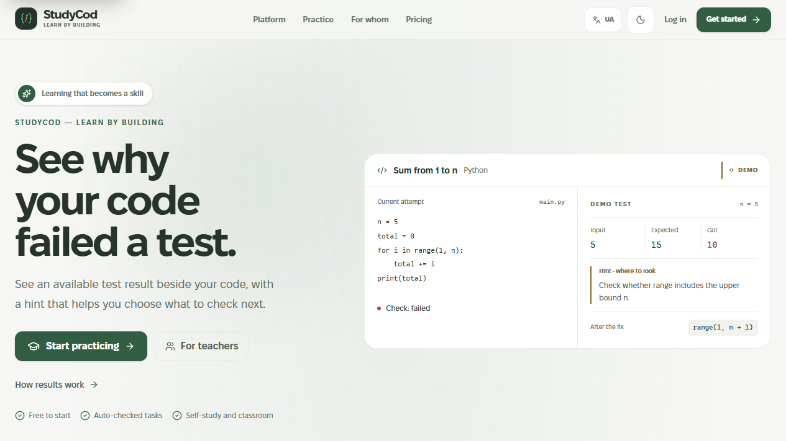
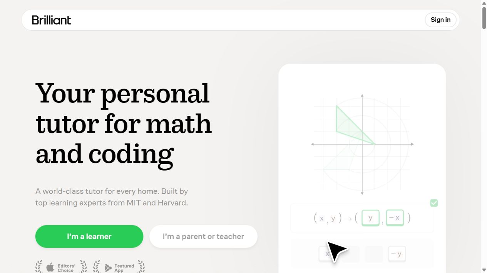
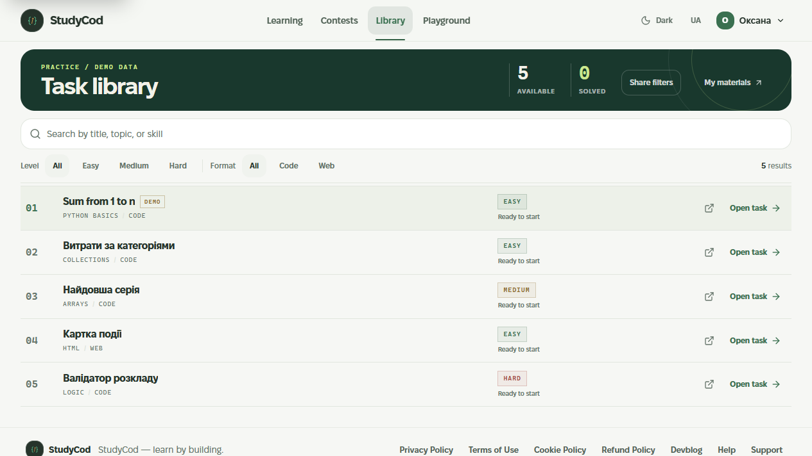
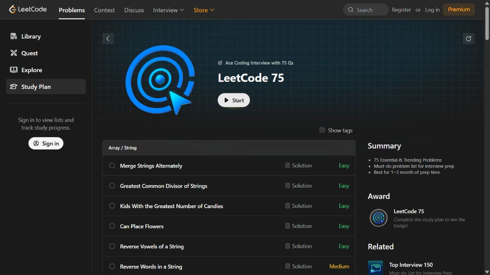

Matched visual review
Both pairs use screenshots captured at 1265×712. StudyCod screens use the English light-theme preview; the library includes clearly marked demo data. The competitor screenshots are from the audit dated 25 October 2026. These sheets support a visual discussion only; they do not establish task equivalence or user preference.
Homepage


Task library


Prompt: Which screen looks more considered and pleasant to use? What makes you choose it? After recording that answer, ask what the screen is for and what the main action is. Rotate A/B order between participants and write responses in pairwise-comparisons.csv. Use qualitative-sessions.csv for the first five walkthroughs. Leave every response empty until a session is actually completed.